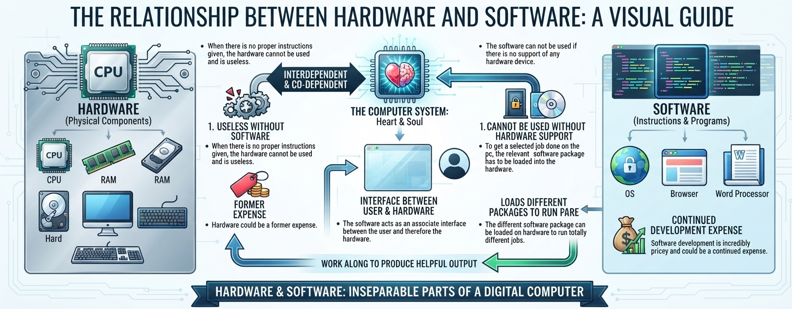

SOCIETY OF COMPUTER ENGINEERING STUDENTS
Computer Engineering is a broad field that sits in between the hardware of Electrical Engineering and the software of Computer Science. When computer engineers design hardware, they focus on what the hardware is trying to accomplish as opposed to the nitty-gritty details of how to lay out the transistors.
They design the processors for systems of all sizes, whether they look like computers or not. The processors go into desktop computers, smartphones, tablet computers, supercomputers, and embedded systems. Computer engineers also design the software that runs on these processors, including operating systems, device drivers, and applications. Specialized processors like GPUs (graphics processing units) or hardware accelerate AI algorithms are also designed by computer engineers.
Computer Engineering is a broad field that sits in between the hardware of Electrical Engineering and the software of Computer Science. When computer engineers design hardware, they focus on what the hardware is trying to accomplish as opposed to the nitty-gritty details of how to lay out the transistors.
They design the processors for systems of all sizes, whether they look like computers or not. The processors go into desktop computers, smartphones, tablet computers, supercomputers, and embedded systems. Computer engineers also design the software that runs on these processors, including operating systems, device drivers, and applications. Specialized processors like GPUs (graphics processing units) or hardware accelerate AI algorithms are also designed by computer engineers.
